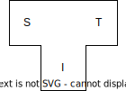
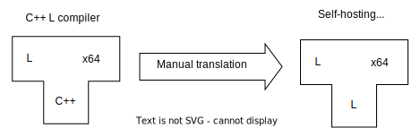
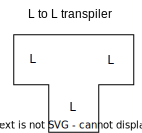

# history
# background
The ghūl compiler (opens new window) is a self-hosting compiler (opens new window), capable of compiling itself from its own source code.
Bootstrapping (opens new window) a new compiler for a new language is a classic chicken-and-egg problem: you need a compiler to compile your new compiler, but that compiler doesn’t exist yet.
The solution is to write the initial compiler in a language that does exist; then, once that compiler is sufficiently reliable, its source code must be translated into the new language, giving a compiler that can compile the new language, including its own source code. It's best to keep the initial compiler simple, for example by handling only a subset of the new language and producing unoptimized code. The smaller and simpler the initial compiler is, the less work is involved in translating it into the new language, making bootstrapping easier.
# tombstones
When discussing bootstrapping, it's common to use tombstone (opens new window) diagrams. In a T shaped tombstone diagram, the T represents a particular version of a compiler. Within the T, three languages are named: the source language, the target language, and the implementation language. The target language is typically some kind of IL or machine language, but for a transpiler, the target language is source code.
For example, a compiler C that reads source in language S, translates it to language T, and is implemented in language I, would be depicted like this:

# the L compiler
ghūl grew out of another language I designed, years before, named L, and I used L in the early stages of the ghūl compiler development. The initial ghūl compiler could in principle have been written in any pre-existing language with a compiler; I chose L because I knew I could easily make changes to the L language and compiler if needed to support the ghūl bootstrap.
(Plus, why spend ages designing a programming language and building a compiler for it, if you're not going to use it to build another compiler for a another programming language you've invented? 😂)
Like the ghūl compiler, the L compiler is self-hosting. It was originally written in C++ and I bootstrapped it manually by hand translating the C++ source into equivalent L. This tedious process was made easier by carefully sticking to an L-compatible subset of C++ when writing the initial C++ version of the L compiler.

# L to L transpiler
The first version of the ghūl compiler wasn't really a compiler and it didn't understand ghūl. It was actually a simple L source code to L source code transpiler, written in L.

This transpiler was in part a strategic piece of scaffolding, intended to support the bootstrap process. I wanted to automate the process of transforming the compiler source code from L to ghūl and so avoid the tedious hand-translation I'd had to do previously when bootstrapping the L compiler. Some parts of the L to L transpiler do survive in the real ghūl compiler (the lexical analyzer and the parser), but the rest was discarded once the initial bootstrap was complete
I added a compiler driver to the L to L transpiler, so it could call the existing L compiler, passing in the L code it generated. The result was a compiler that consumed L source code and generated x64 machine code, but which also generated transpiled L source code as an intermediate step.

This simple 'ghūl compiler' still understood no ghūl, performed no semantic analysis, and generated L source code as its 'object code'. It relied completely on the L compiler for semantic error detection and reporting and for x64 code generation.
# L to ghūl and ghūl to L transpilers
I enhanced the L to L transpiler so it could transpile L to ghūl and ghūl to L. The transpiler was still written in L and still relied on the L compiler as a backend to generate the x64 executable from transpiled the L code.

# first ghūl bootstrap
Then I passed the L source code of the ghūl to L transpiler through the L to ghūl transpiler, generating output in ghūl. This yielded a ghūl to L transpiler written in ghūl:

This step is the first bootstrap, and it's why I started with a transpiler: the source code of the ghūl to L transpiler, which was originally L, has now been mechanically transformed into ghūl. This new transpiler is written in ghūl, and it can transpile itself into L: it has become self-hosting, albeit still dependent on the L compiler to generate machine code from L.
# .NET backend
Gradually, I integrated more semantic analysis into the ghūl compiler: representations of classes, traits, methods, functions, variables, etc., along with corresponding error checking and reporting.
With the compiler now capable of constructing a detailed representation of input programs, I began implementing a .NET IL generation backend. I did this in stages, adding support for expressions and local variable definitions first, then working through the other more advanced language constructs.
I initially used scaffolding to test generated IL snippets, because the compiler wasn't capable of generating completely self-contained IL programs. As I implemented .NET IL for the various ghūl language features, and the compiler became increasingly more capable, I guarded against regressions by building integration tests (opens new window) as I went. The regression test runner started out as a collection of bash scripts, but as the compiler stabilized, I rewrote it in ghūl (opens new window). The initial regression suite included tests asserting correct IL generation for all the different ghūl language constructs as I implemented them. As soon as the compiler could generate code for complete programs, I added further integration tests exercising generated code execution.
I continued to maintain the transpilation to L source code backend alongside the .NET IL backend throughout this process, until the .NET IL backend was sufficiently complete and stable to self-host the compiler on .NET.
This phase was complicated by L's LLVM backend and by its standard library, with features like generic collections and file handling, which interfaced with glibc and were not source compatible with similar facilities in .NET. I needed to be able to use these facilities in the compiler source, and have the built compiler run on both glibc and .NET. I solved this by cloning a small subset of the .NET standard library in ghūl, and then porting references to the L standard library in the ghūl compiler to use this .NET library subset, thus enabling the compiler to be built on and target both L and .NET.
# full self-hosting on .NET
Finally, with the compiler reliably self-hosting on .NET, I removed the L transpilation backend and the .NET library subset, and the compiler was successfully bootstrapped onto .NET.
You can see this process in the Git history in the ghūl compiler repo (opens new window), going all the way back to the initial commit.